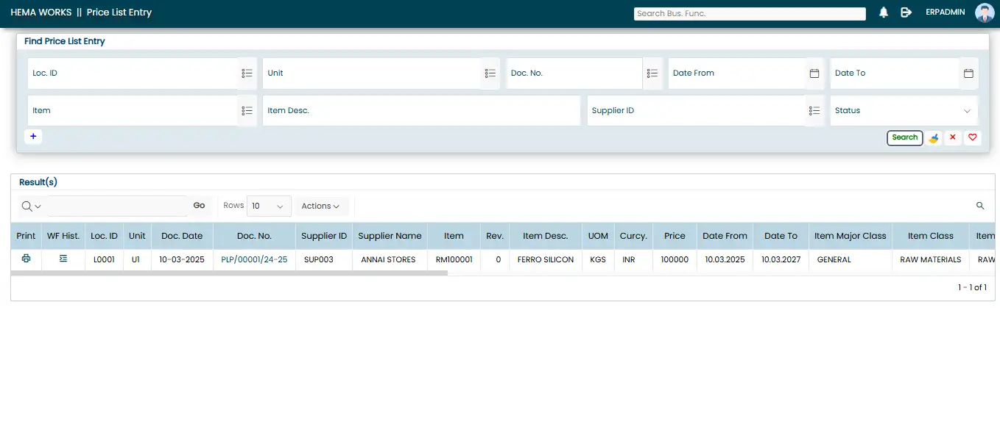
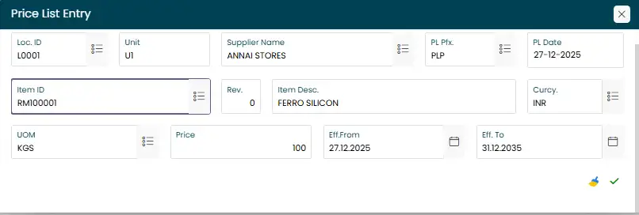
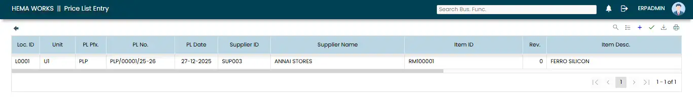
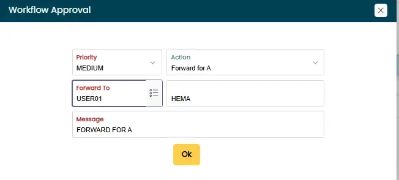
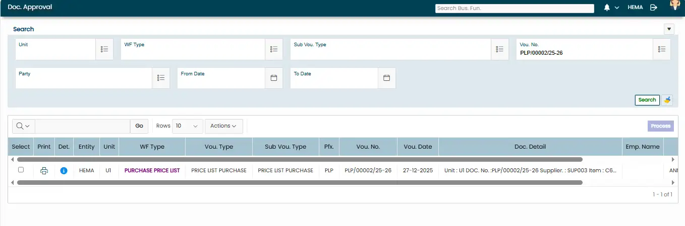
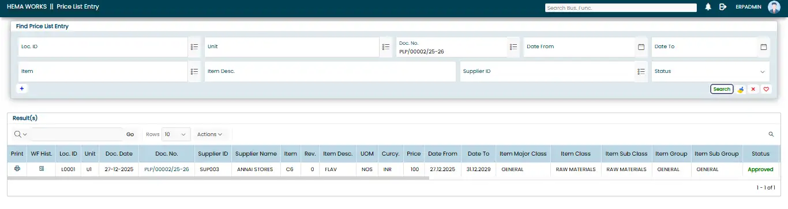
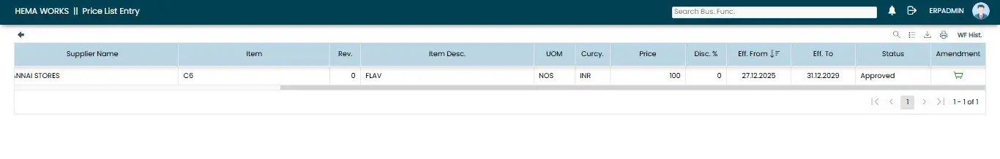
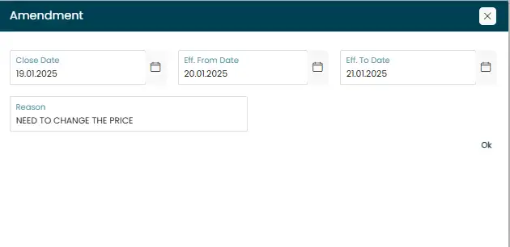

<div data-category="Purchase Order" data-title="Price list Entry" data-updated="December 01, 2025" data-contributors="RoadmapIT" data-breadcrumb="Home,Purchase Order,Price list Entry">
  <div class="page-content">
    <p>Price List Entry in Roadmap ERP allows users to define and manage pricing information for products or services by the Suppliers. It enables the entry of item-specific prices, discounts, and effective dates to ensure accurate and up-to-date pricing across transactions.</p>

    <h5>Navigation path:</h5>
    <p class="fs-6">Supply Chain \ Purchasing \ Transaction \ Price List Entry</p>

    

    <ul style="list-style-type: none; align-content: center">
      <li class="mouse-icon">Search screen displays the list of Price List Entry with the relevant details and its status.</li>
      <li class="mouse-icon">Click on search button to filter all the records.</li>
      <li class="mouse-icon">User can filter the respective documents by entering the search parameters at the header.</li>
      <li class="mouse-icon">Using search button, system displays the results relevant to the search parameters entered.</li>
      <li class="mouse-icon">On clicking; the corresponding transaction record will be displayed.</li>
      <li class="mouse-icon">Using <i class="bi bi-eraser text-secondary"></i> icon, entered search parameters can be cleared.</li>
      <li class="mouse-icon">To close the screen, use <i class="bi bi-x-lg text-danger"></i> icon.</li>
      <li class="mouse-icon">
        By Clicking the
        <i class="bi bi-plus fs-4 mx-2 text-primary"></i>
        Add button we can create new Price List entry by entering all the mandatory fields displayed in the Add dialog.
      </li>
    </ul>

    

    <ul style="list-style-type: none; align-content: center">
      <li class="mouse-icon">Choose the location from LOV.</li>
      <li class="mouse-icon">Choose the Supplier from LOV.</li>
      <li class="mouse-icon">Choose the Document Prefix from LOV.</li>
      <li class="mouse-icon">Choose the Item from LOV.</li>
      <li class="mouse-icon">Choose the Effective From and To Date.</li>
      <li class="mouse-icon">Enter the Price.</li>
      <li class="mouse-icon">
        Click on
        <i class="bi bi-check-lg fs-4 mx-1 text-success"></i>
        button, new price list entry is created and Document navigate into Transaction screen.
      </li>
    </ul>

    

    <ul style="list-style-type: none; align-content: center">
      <li class="mouse-icon">The Document will be sent for approval using the Post button.</li>
      <li class="mouse-icon">The necessary work flow operations are done in the Workflow document control screen.</li>
      <li class="mouse-icon">By using the Cancel button, the document can be cancelled.</li>
    </ul>

    
    <ul style="list-style-type: none; align-content: center">
      <li class="mouse-icon">Document Forward to forward user.</li>
    </ul>

    

    <ul style="list-style-type: none; align-content: center">
      <li class="mouse-icon">Log in Forward user.</li>
      <li class="mouse-icon">
        Click on view Details
        <i class="bi bi-info-circle text-primary"></i>
        button to view the specific document. Screen navigate into query screen to check the details.
      </li>
      <li class="mouse-icon">After click the back button document navigate into Approval screen.</li>
      <li class="mouse-icon">Choose the Approval/forward/Return button field and click Process button required process performed.</li>
    </ul>

    

    <h2>Price list Entry Amendment</h2>

    

    <ul style="list-style-type: none; align-content: center">
      <li class="mouse-icon">Choose Approved document to click in Find page.</li>
      <li class="mouse-icon">Screen Navigate into Transaction screen to click Amendment.</li>
    </ul>

    
    

    <ul style="list-style-type: none; align-content: center">
      <li class="mouse-icon">Click on the Amendment button.</li>
      <li class="mouse-icon">Choose the Close Date.</li>
      <li class="mouse-icon">Choose the Effective From and To Date.</li>
      <li class="mouse-icon">Enter the Reason for Amendment.</li>
      <li class="mouse-icon">Click Ok, Document Amended and Status of the document updated as Draft.</li>
    </ul>
  </div>
</div>
